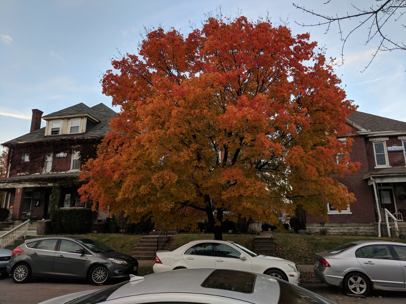

Hi and welcome. This is where I share whatever thoughts I have about whatever subjects I happen to be thinking about.
The Anthropocene Reviewed Reviewed
I'm typing this review as I sip green tea out of my fun coffee mug decorated with pictures of mugs of coffee and synonyms of coffee: Espresso, Java Time, Cappuccino. I recieved this mug as a gift from friend Bobby in high school. It was a thank you for some favor I did. I remember he asked me if I liked coffee before he gave it to me. I forget what exactly the favor I had done for him was but even at the time I remember thinking it wasn't the sort of favor one needed to reciprocate with a gift. My High School friend Pavleen also owes me a favor. I forget what I did for him, but in my yearbook he wrote "Don't forget about the favor I owe you". I generally look back on my past self (anything more than a few hours really) as an unreliable piece of shit but recalling these anecdotes makes me think I might be biased. I'm at least an unreliable unreliable piece of shit.
This is what every episode of John Green's podcast The Anthropocene Reviewed is like. A sprawling trail of associations that leaves you forgetting what the original point was but feeling a new sense of connection to the objects around you and the past. As John Green will remind you Faulkner told us: "The past is never dead. It's not even past".
This podcast came to my attention as an Allen Wu recommendation. Allen also introduced me to: Los Campesinos, Mitski, St. Vincent and Python 3. By carefully letting Allen know everything he tells me about is the best thing ever I've conditioned him to let me know about all the best stuff. But this article isn't about 4.5 star Allen recommendations but about John Green's podcast the Allen Wu recommendation.
I remember listening to it for the first time driving with my girlfriend, Rhiannon. Recommendatin in hand I just put it on the car aux. My first impression was it was a strange album cover art. As John Greene's calm voice came over the speaker, telling me about about Grey Alien's origin's in the zeigeist and his own childhood fear that everyone around him was an alien decieving him, I realized my expectations had been flummoxed. I quickly apologized and handed the aux back to Rhiannon. Later as I moved into our new apartment together I listened to episode after episode as I drove back and forth from my old house with Math department friends and Rhiannon's old house with OSU housing strangers. Each episode was a calming bite sized delight. At first I skipped the ads but then I came to enjoy the strange weaving of product placement into the middle of each episode. John advertised for the same companies over and over. But each time he sold it with a new absurd premise. Most podcasts compell me to frantically skip 15 seconds repeatedly two or three times. But with the Anthropocene Reviewed I let it spin me into a meditative trance throughout the precisely just shy of 30 minutes episodes.
Because I did no research before indulging in Allen Wu's recommendation I did not realize it was even by a person who was famous independent of the project, let alone John Greene. His introduction where he says "I'm John Greene and this is the Anthropocene Reviewed" probably should have tipped me off. But someone John's name is just generic enough that it didn't flag my recognition. I remember thinking "this anecdote is familiar" when John told his anecdote about his old boss recommending Harvey; a movie I myself watched with my dad when I was much younger. One of the best movies my dad got from Blockbuster for us. Or maybe that was already post Netflix. It didn't click until John said "When I was writing the Fault in Our Stars...", when I immedietly felt like an idiot.
Like all nonfiction media intended for entertainment, its at its best when you're not really familiar with the subject matter. But somehow the episodes on Tetris and Mariokart still managed to teach my somethings. For readers who don't know, I was #6 on the now defunct TetrisFriends. Once at Google I told a coworker that I didn't think I had enough domain knowledge about anything to write a book. And then later in the conversation when Mariokart came up and I pontificated on which carts were the best, and at what place threshold you should try to improve on a banana, he said he thought I could write a book about Mariokart. Which is perhaps true, if people were interested in my deep insights into Doubledash and Wii Mariokart. I'm not universally a Luddite when it comes to Nintendo games, though smash ended with Melee. In my second year of college when I drank coffee for the first time and finished the essay I was working on just under two hours later I proceeded to play Mariokart 8 all night. In my mind it represents a substantial improvement in the franchise artistically. The stages were so whimsical and bright, the designs Escherian. Typing this out almost makes me want to run out and get the latest Nintendo console.
I'm a sucker for art that weaves together quaint trivia and deep emotional truths. Some highlight episodes for me are the Coney Island Hot Dog Eating Contest, Hawaiian Pizza and Geese, the only episode I played twice to share with my girlfriend, because of our shared hatred of the water fowl. I recommend the Anthropocene Reviewed to anyone who enjoys podcasts or learning things they'll immedietly forget. I rate it 4 out of 5 stars.
Blogging in Earnest
I've decided going forward I want to add something permanent to the internet at least once a day. I've let myself become a spectator in online communities in a way that is really not good. I have so much to say and I really ought to start screaming out on this platform that no one knows about. I want to get into the habit of creating things. I don't create anything, I only consume. Even my present work is just consumption. The goal is to keep eating up math papers until I understand enough to contribute. But how can I hope to contribute big things if I cannot contribute small things? I have all kinds of pie in the sky ideas for things I could make. Truly I live in wonderful times. There is nothing stopping me from making music, videogames, writing, art which could in theory reach millions of people. I have all the technology at my fingertips right now to make any string of text, to make any sound to edit any image. I've just gotta start imagining things. I've got to turn off the part of my brain that enumerates the things I need to learn to get started. Or the part of my brain that thinks about how much time it'll take to make something at all competent. And how even after some sort of competency is achieved there is no gauruntee of ever making something I'll be satisfied with.
So my goal is to make something permanently and publicly available on the internet everyday. To make things easy for myself in the beginning I imagine a lot of those things will be blog posts. Hopefully not too many of them will be meta blog posts but I've really got to start somewhere. I can't wait until I'm ready. I've been waiting for a long time. In the longterm I'd like to make this site beautiful. I have ideas for Android Apps and Youtube videos. I think it'd be cool to make a math podcast. I'd like to make some illustrations. I'd like to stream myself doing programming contests and mtgo tournaments. So many ideas and so little time!
All my worries about this project fade away when I state them concretely.
- What if the things I say are stupid and pointless? No one will read them anyway! Who cares? Maybe if they're obviously stupid someone will let me know and I will benefit.
- What if someday I'm a serioues person and I'm embarressed by my work here? Well I can always delete it. And lots of artists have early work that doesn't stand up to their eventual standards. The early XKCDs are a little weird and not in the later regular style. It's naive expect to start doing good work before producing mountains of shitty work. Maybe its vaguely pointless to publish shitty work but the process of using html, js etc. and AWS are themselves things I want to improve at.
- My css is ugly! Well I can change that before I go and post this site anywhere. So that doesn't really matter. I bet in the year 20XX when readers have gotten down here they won't know what this bullet is even about!
- I don't have the time to content daily! Even content that is barely above stream of conscious! Bullshit! I have so much time. If I just took all the time I spend consuming things and instead produced something I'd have oodles of time to produce all the shit I want. And I deeply believe I'd be better for it.
Hopefully having made a public commitment I'll stick to it. Not that I have a history of honoring commitments. Now seems like a good time to start. I gotta start before its too late.
Sometimes the Trees are Beautiful
Sometimes I look out my window and see a mass of leaves and branches swaying in the breeze and think to myself: My god those shades of greens. Those shadows and limes and verdes. I could soak in the infinite unexplainable inexplicable complexity peering in at me through my window forever. I could ponder the alternating twigs of leaves coming off main branches. I could wonder about the evolutionary pros and cons of spiky leaves and rounded ovals. Here's the view from my porch:

Wow, what a paradise of abundance. Here for me and all my neighbors.
Last fall I was walking down some streets near my old home and every tree jumped out at me. Such a cacophony of reds and oranges and yellows. The way they reached their veiny hands through the overcast sky, painting an intricate ceiling overhead. I just walked down the street taking picture after picture. There was this one:
And all of these:
I remember one unseasonably cold day in April when I wasn't looking forward to the day but on my walk to the tower I realized peering through the fog I was surrounded by somber dignified ancient creatures. They watch me pass day after day. And would watch millions like me go by. I am such a small part of such a beautiful world. And I am so lucky to be a part of it.
One time as an undergrad I was with a person on acid. And they were stunned by the beauty of the sun on the lake. I let them know I thought it was weird they were taking a picture. The sun looked the same that day as it did everyday. The next day they'd look back at it with their normal eyes. If they ever did look back. But I understand now. I understand now.
But I don't feel like this right now. I have some papers I need to read that I don't feel like reading. I keep refreshing newsfeed websites which never show me anything nice. I wish I knew why sometimes the world was beautiful and sometimes it just was.
Blog 0
Hello and welcome to my first blog post. It has risen from the ashes of my old Google Blogger Blog. I've decided its time to have an online presence as a public person. Up to now my attempts have been haphazard and done vaguely ironically, including:
- My previous Blogger Blog in which I wrote about Magic: the Gathering and nonsense.
- RiceBrocolliChicken an Instagram in which I posted pictures of my (identical) breakfast everyday.
- A personal Facebook in which I scrolled more than posted.
My goals for this website include:
- Exporting my thoughts and values into the wider world. To be better understood and perhaps in aggregate helping the world be better understood.
- To acquire technical skills with AWS and web development.
- To foster a fun and unusual space on the internet which hasn't been created or maintained for any clear purpose.
- To give my dope 4 character URL the home it deserves.
This first post is mostly a sketch. I didn't want to wait forever before creating something. In general I want to do more and think less. If that means doing stupid and pointless things then I will do stupid and pointless things.